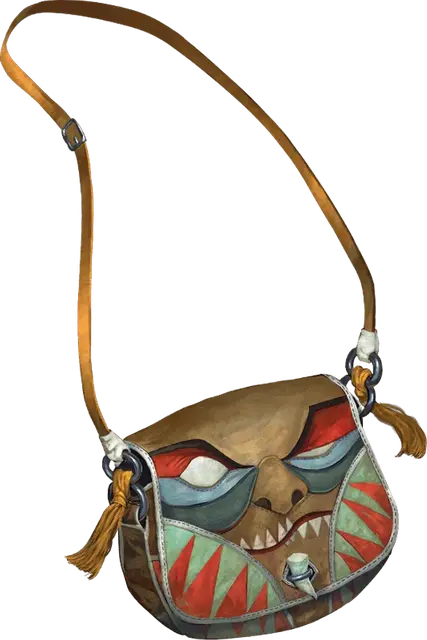

Сумка пожирания
Bag of Devouring
Чудесный предмет, очень редкий

Рекомендованная стоимость 5 001-50 000 зм
На первый взгляд эта сумка напоминает сумку хранения, но на самом деле это ротовое отверстие гигантского межпространственного существа. Если сумку вывернуть наизнанку, ротовое отверстие закроется.
Существо, связанное с сумкой, может чувствовать всё, что помещают в сумку. Материя животного или растительного происхождения, помещенная в сумку, пожирается и исчезает навсегда. Если в сумку будет помещена часть живого существа, как в случае, когда кто-нибудь засовывает в неё руку, существует 50-процентный шанс, что существо затянет в сумку. Существо в сумке может действием попытаться высвободиться, совершая проверку Силы Сл 15. Другое существо может действием залезть рукой в сумку, чтобы вытянуть оттуда другое существо, совершая проверку Силы Сл 20 (при условии, что его самого не затянет туда). Все существа, начинающие ход в сумке, пожираются, а их тела уничтожаются.
Неживые предметы могут храниться в сумке, которая вмещает один кубический фут такой материи. Однако, один раз в день сумка пожирает все хранящиеся в ней предметы, выплёвывая их на другом плане существования. Мастер сам определяет время и план.
Если сумку проткнут или разорвут, она уничтожается, а всё её содержимое переносится в случайным образом выбранное место на Астральном Плане.